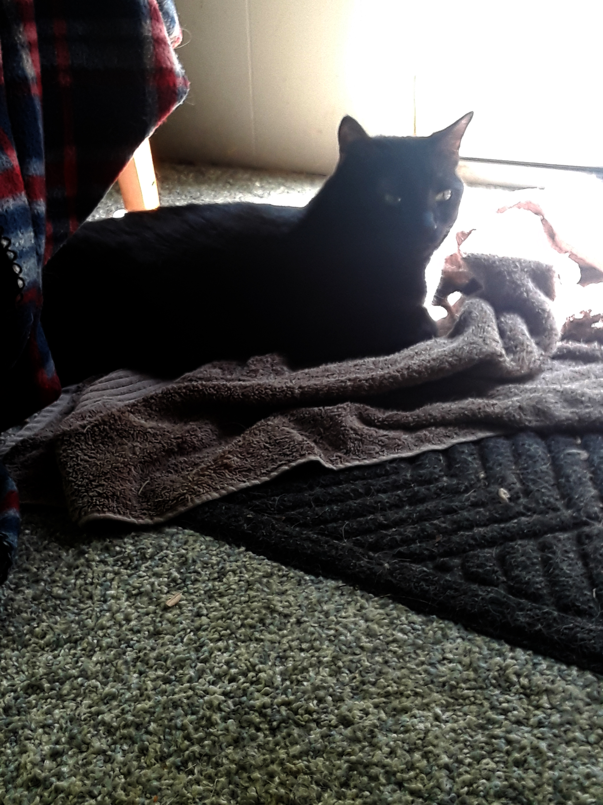
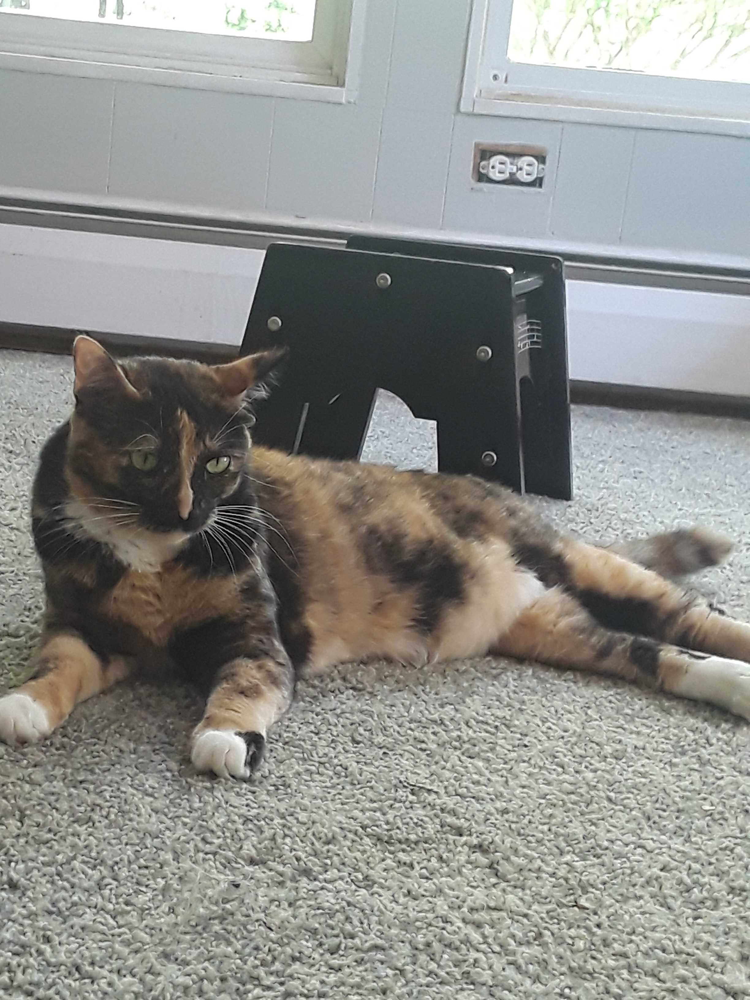

Family
Family Spotlight
Spotlight Career
Career Review
Review Survey
Survey Favorites
Favorites Cause
Cause


Listening to music is easily a thing I do 90% of the time. Be it I'm not doing anything, or I
am doing something but I need to focus, there's a good chance that I'm going to be listening to music.
Some of my favorite tracks include:

While it's technically a series of 4 movies, they're all based off of the same game: Shin Megami Tensei: Persona 3.
The story follows Makoto Yuki, a high school student who lost his parents in an accident 10 years ago, who learns
there is a period of time hidden between one day and the next. This period is known as the Dark Hour, a time when
monsters called Shadows appear. He soon learns how to fight against Shadows that threaten the world from the
tower of Tartarus, the place where the Shadows normally reside.
There are so many things I love about this movie, most of which I won't go too in depth about, but I can give a brief
explanation for. The first thing being the animation. You can actually see the characters in high quality, whereas
you couldn't in the game as it was slightly older. Another aspect I like is the depiction of characters in situations that
would make sense for them, to flesh them out in a unique way that we didn't see in the game. the only real "dislike"
I have about the movies is that the story had to be cut in many ways that lost some of the original feel that we felt in
the game.


Overwatch is a team-based multiplayer first-person shooter developed and published by Blizzard
Entertainment. It was released on May 24, 2016 for PlayStation 4, Xbox One, and Windows. In
every game, players into two teams of six, with each player selecting from a roster of 30 heroes in
one of three classes: Healers, DPS, and Tanks. Every character also has their own unique set of
abilities, giving the player a different experience for each character they play.


It's no secret aming my friends that I love biking. Any chance I get I will go for a quick ride either to go
somewhere, get something done, or even just for recreation. Fun fact: The most bike rides I've went on in
one day is 6 (at the time of me writing this at least). This activity of mine has actually started a... unique joke
within my friend group. Because I bike so much, my calf muscles have become very well-defined, so my
friends joke about me having "turtles for legs". (I don't get it either. Just go with it).

I am very much open about my opinion on coffee. I love the stuff. Ask any of my friends and they will tell you just how
much I love coffee, and how often I make that fact clear. They'll all tell you the same thing: "He is in love with it." The same
is true with sprite. They're both my go-to drinks when I don't know what else to have. I know that there'e definitely better
(and healthier) choices, but I do try to have them in moderation.
As soon as i tried this dish once as a kid, I instantly fell in love with it. The flavor is excellent, the texture is just at that
right mix between chewy ad crunchy, and all around it's very balanced on its distribution of ingredients. Every night that
we have this for dinner, I can't wait to get to try it again. Even though it's still the same flavor that I've always known, it
still comes off as a kind of surprise, kind of like "wow, there's this minor detail that i never noticed!"
My Hero Academia takes place in a society where having "super powers" has become the norm. The story follows Izuku
"Deku" Midoriya, who is a part of the 20% of the population that unfortunately weren't lucky enough to be born with a quirk.
Despite this, he has made it his life goal to be a hero even if he doesn't have a power. Because of this, he is bullied by others
around him with powers and looked at with pity by those without powers. Midoriya is resentful towards these circumstances,
but still chooses to not let others get to him (as much as he can at least). One day, however, Midoriya comes across All
Might, the world's current number 1 hero. After seeing Midoriya's potential in a villain attack, All Might decides to pass down
his quirk to Midoriya, much to Midoriya's overexagerated happiness.
As each season progresses, the series gets more and more intense. A lot of people consider it the best anime of this
generation so far, due the the pacing, the characterization, character development, concepts, situations, ships (because
fanboys and fangirls be crazy), etc. It presently has 3 seasons aired, one movie, titled "The Two Heroes", and they are currently making season 4, which they
announced in-episode in the final episode of season 3.
Fozzie is currently our youngest cat. He is just under a year old, and is actually big for his age. He is very playful, but kind of a jerk at
the same time. By this, I mean that he almost always gets into fights with other cats, specifically Holly, Millie, and Joxi.

Holly is a black cat. Although she is shy when she first sees you, she is very friendly once she gets to know you. By friendly, I mean very
snuggly, so much that she will literally roll into you and just curl up. We know her for her trademark loud purring to signify that she's
happy. Her and Millie are practically sisters. 
Millie is a calico cat. She was adopted from a shelter that wasn't the best quality. She was covered in fleas, and was in desperate need
for a bath. After she was cleaned up, she became one of out friendliest cats, next to Holly. While she isn't as snuggly as Holly, she is
well known for showing her affection in similar ways, such as her loud purring, following you around, and sitting by you. Her and Holly
are practically sisters.
I'm sure we all know what an Xbox is at this point. I never really was into console gaming too much, as I didn't find that playstyle as
entertaining as others, until my friend got me addicted to Overwatch for xbox. Anytime I'm not busy, and/or anytime my friends ask
me to get on, it's a one-way trip to whatever game we're playing this time.
Murder mysteries have always been a guilty pleasure of mine. Despite my constant saying that nothing good ever comes on TV anymore, I do love watching the
live murder mysteries at the time. Dateline, Forensic files, I (almost) got away with it, etc. I don't know what it is about them, but they all give me the same feeling
of satisfaction.